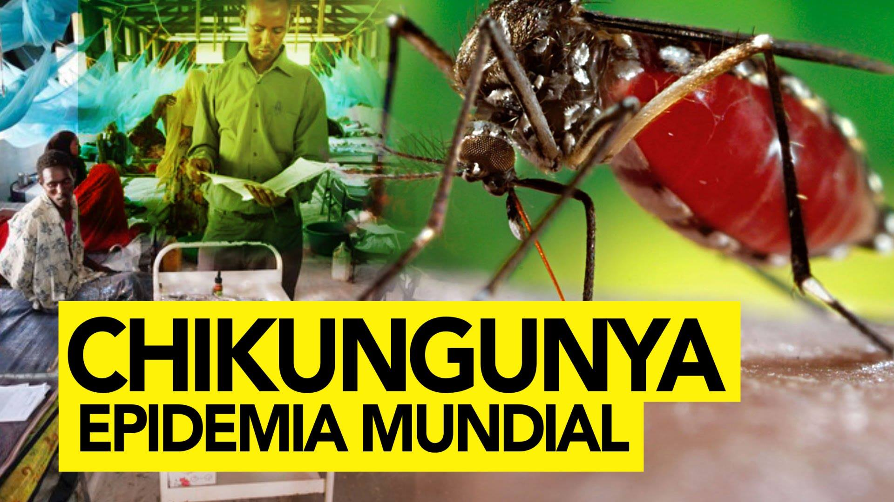

¿QUÉ ES?
La fiebre de Chikungunya (CHIK) es una enfermedad vírica emergente
Causada por un virus ARN del género alfavirus y la familia Togaviridae.
este virus se transmite a los humanos por la picadura de mosquitos infectados,
principalmente Aedes aegypti y Aedes albopictus.
SÍNTOMAS:
Prevención:
-Mantener aislados de tu familia los contenederos de basura
-Desechar el agua estancada contenida en los recipientes
-Uso de repelentes de mosquitos
-Uso de mosquiteros
¿Qué hacer?
*Acudir a una institución de salud
*Como los dolores son intensos, se debe guardar reposo en cama, de preferencia usando mosquitero, para evitar que lleguen mosquitos y propaguen la enfermedad.
Para el dolor y la fiebre se recomienda tomar acetaminofén. La fiebre y el calor ambiental hacen que se pierda agua del cuerpo ,por el sudor y la respiración,lo que hace necesario tomar líquidos en abundancia.
Entre dos a tres litros por día en los adultos y en los niños continuamente, a voluntad.
Se debe tomar agua, agua de coco, sopas, jugos de frutas, suero de rehidratación oral. Se debe evitar la deshidratación que puede llevar a complicaciones.
Agradezco su atención.
Atte: Irene Martínez